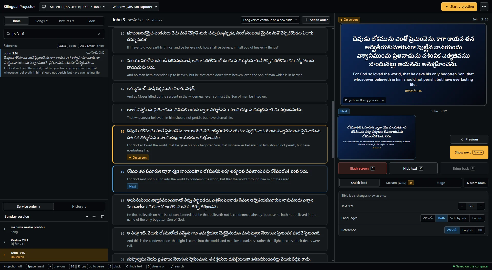
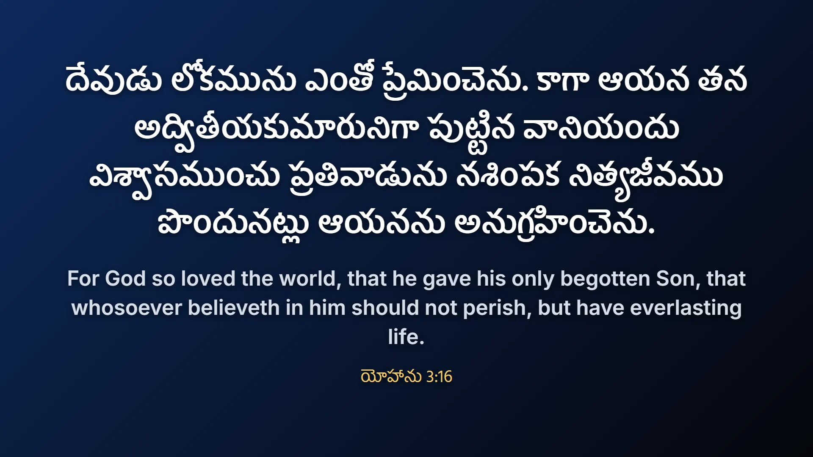
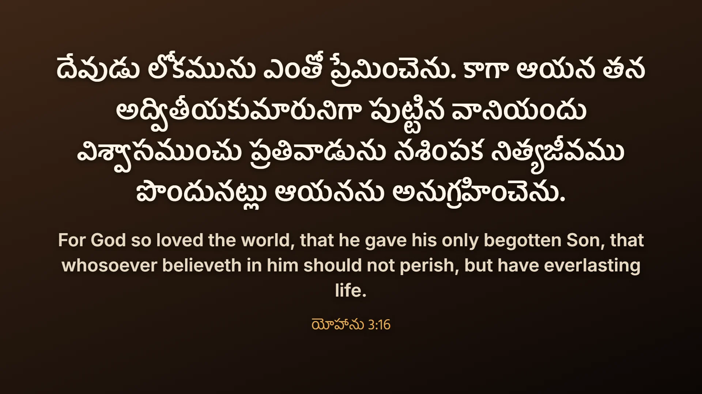
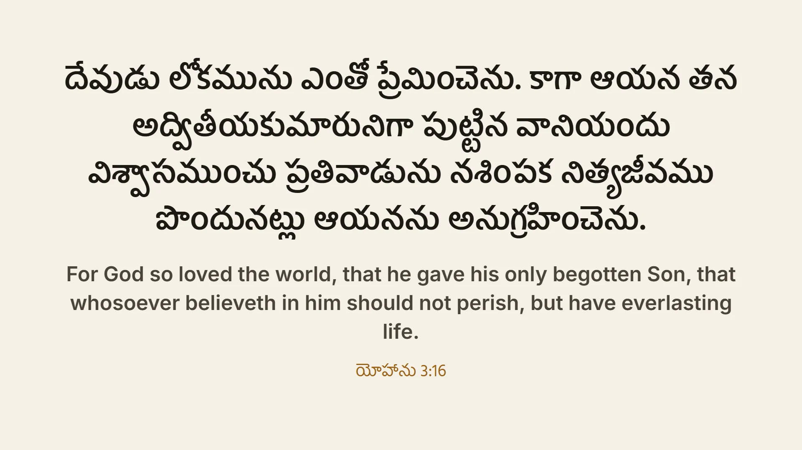
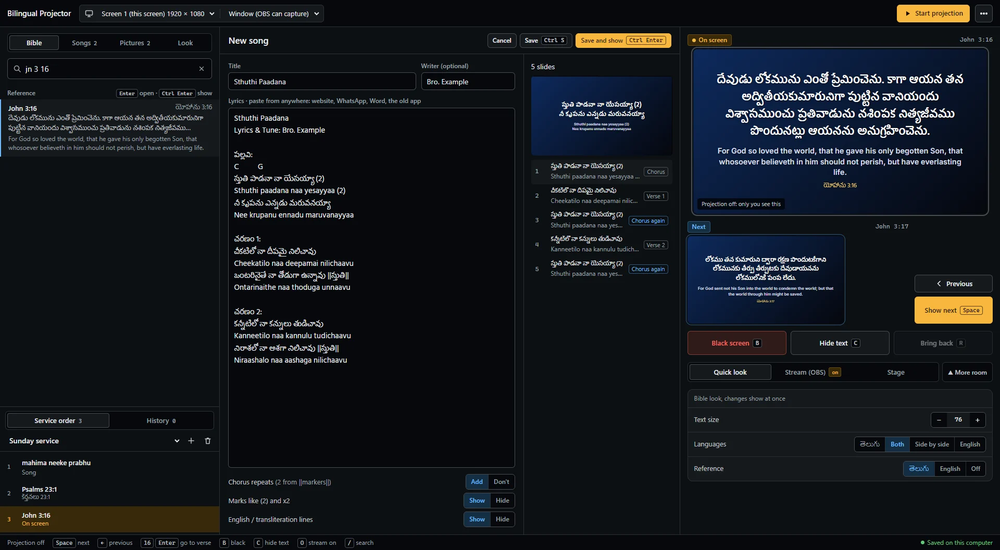
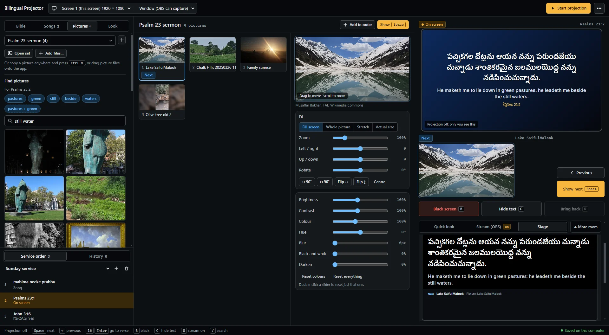
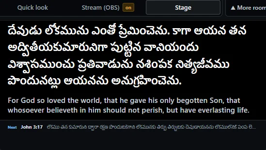
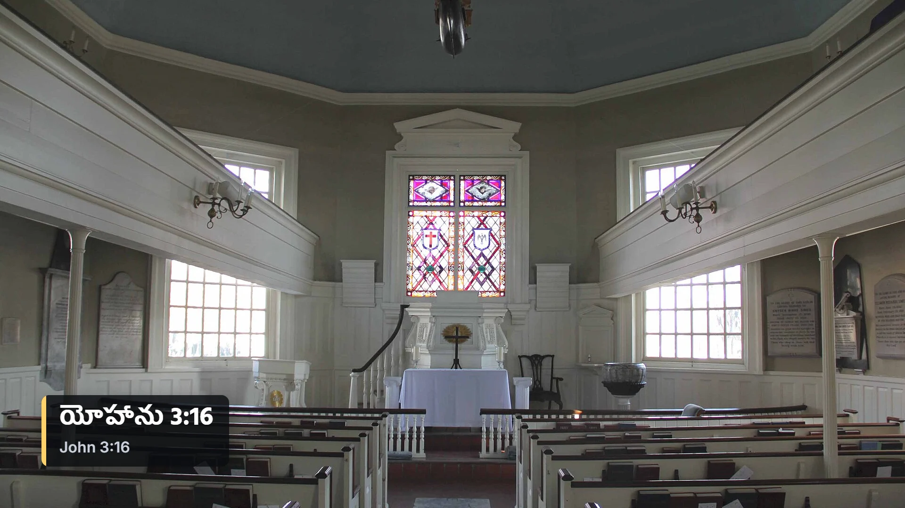
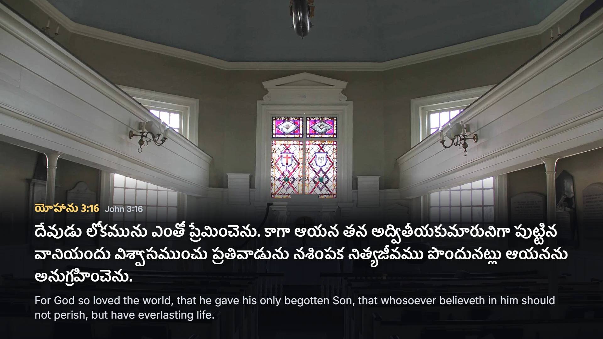

Telugu and English, on one screen.తెలుగు మరియు ఆంగ్లం, ఒకే తెరపై.
A free projector for church services: the Bible, songs, pictures and the livestream.
Free and open source. Also a .deb for Ubuntu and Debian and a portable Windows version.

The operator's screen during a service: verse 16 is on the projector, verse 17 waits as next.
What the room sees.
Nine looks, each made for the Bible and for songs. A long verse continues on a new slide instead of shrinking past readable.



Built for Sunday morning.
Everything an operator reaches for during a service, one key or one click away.




Plain facts.
What it needs, where it runs and what it costs.
Windows
An installer, or a portable version that runs from a USB stick.
10 and 11, 64-bitLinux
An AppImage for most distributions, and a .deb for Ubuntu, Debian and Mint.
64-bitWorks offline
The Telugu Bible, the KJV and the fonts are inside the app. Only picture search needs the internet.
no accountYour songs stay yours
Songs, service orders and pictures are kept on your computer, and you can export them any time.
local filesComing from Bilingual Projector Pro
Import its backup: your songs, service orders and looks come across.
one clickFree, for good
Open source under the MIT licence. Churches and developers may use, share and improve it.
MITReady for this Sunday.
Download it, import your songs, and press Space for the next verse.
Windows may say "Windows protected your PC" the first time: choose More info, then Run anyway. All versions and files.
